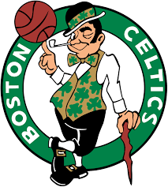

O Boston Celtics é uma das franquias mais icônicas e bem-sucedidas da história da NBA. Fundado em 1946, o time é conhecido por sua rica história, inúmeras conquistas e uma legião apaixonada de fãs.
Os Celtics têm um legado invejável na NBA, com 17 títulos de campeonato, empatados com o Los Angeles Lakers como os times mais vencedores da liga. A era de ouro dos Celtics começou na década de 1950 e se estendeu pelos anos 1960, quando o time dominou a liga sob a liderança do lendário técnico Red Auerbach e jogadores como Bill Russell, Bob Cousy, John Havlicek e Sam Jones. Durante esse período, os Celtics conquistaram 11 títulos em 13 temporadas, incluindo oito consecutivos de 1959 a 1966.
Os anos 1980 trouxeram uma nova era de sucesso para os Celtics, liderada por Larry Bird, Kevin McHale e Robert Parish. Sob o comando do técnico K.C. Jones, os Celtics ganharam três títulos em 1981, 1984 e 1986. A rivalidade com o Los Angeles Lakers, simbolizada pelo confronto entre Larry Bird e Magic Johnson, marcou a década e é uma das mais famosas da história do esporte.
Após um período de declínio nas décadas de 1990 e início dos anos 2000, os Celtics voltaram a se destacar em 2008, quando conquistaram o 17º título da franquia. Esse time foi liderado pelo trio de estrelas Paul Pierce, Kevin Garnett e Ray Allen, sob a direção do técnico Doc Rivers. Os Celtics venceram os Lakers nas Finais da NBA de 2008 e voltaram às finais em 2010, mas perderam para os mesmos Lakers em uma série disputada.
Os Celtics são conhecidos por seu forte senso de tradição e identidade. O TD Garden, onde a equipe joga, é famoso por seu ambiente eletrizante e pelos banners de campeonato que adornam o teto. A cor verde dos Celtics e o trevo de quatro folhas em seu logotipo são símbolos reconhecidos mundialmente.
O impacto dos Celtics vai além das vitórias e troféus. Eles foram pioneiros na integração racial na NBA, sendo o primeiro time a ter um quinteto titular totalmente afro-americano e o primeiro a contratar um treinador afro-americano, Bill Russell, que também atuava como jogador-treinador
Atualmente, os Celtics continuam a ser uma força competitiva na NBA. Com jovens talentos como Jayson Tatum e Jaylen Brown, a equipe está bem posicionada para continuar sua tradição de sucesso e buscar mais campeonatos nos próximos anos.
Os Celtics também são ativos em iniciativas comunitárias através do Boston Celtics Shamrock Foundation, que apoia programas que servem jovens e famílias em toda a Nova Inglaterra. A equipe se envolve em diversas atividades de caridade, incluindo eventos para educação, saúde e bem-estar social.
Em resumo, o Boston Celtics é uma franquia com uma história rica e diversificada, marcada por sucessos, lendas do basquete e um impacto profundo na cultura e na sociedade.
Lakers Bulls Warriors